Overall Layout
The figure below displays the landing page when you launch Argus. The app lands on the Focus tab, and the user can navigate from there.

General Layout
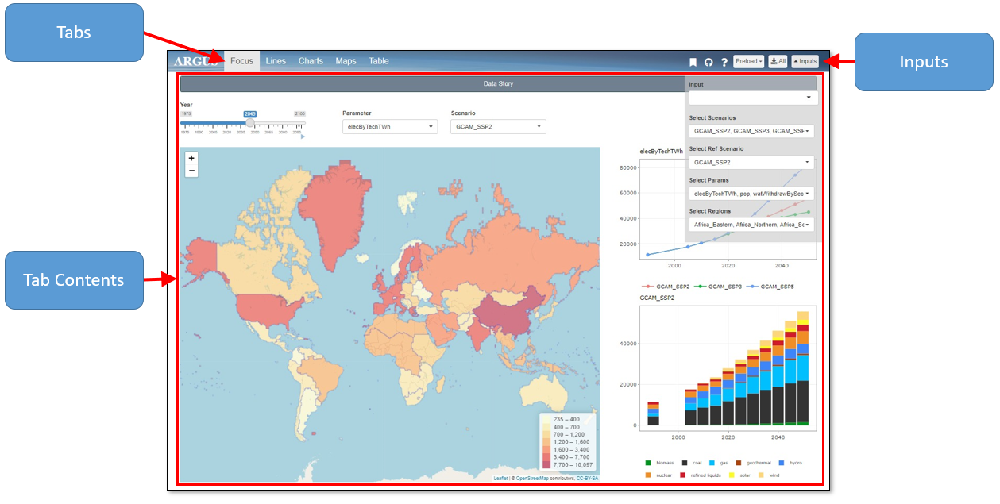
Inputs
Within the input panel, there is a data input drop down at the top and several selection drop downs underneath.
Data Input
Data inputs can be uploaded through a url, csv file, or GCAM directory. Select one and the corresponding input window will appear. The image below shows the corresponding pop-ups for each input option.
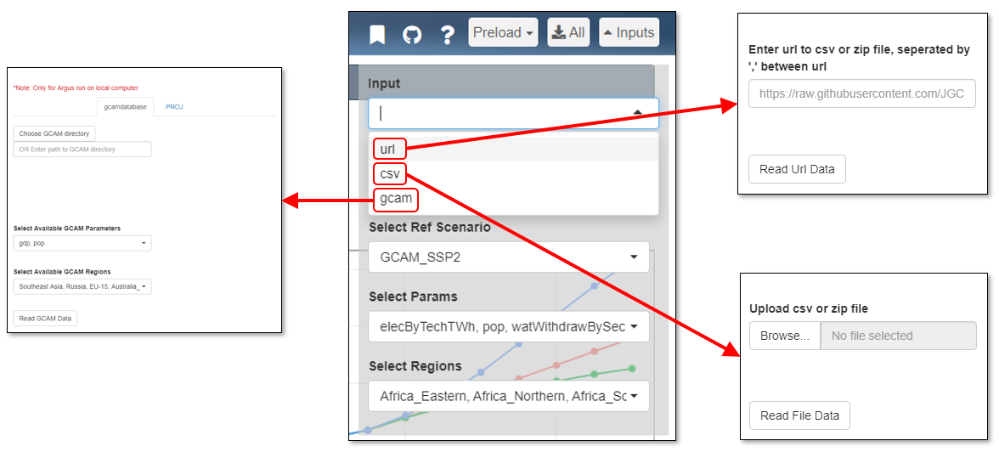
Uploaded data must be formatted in the following manner:
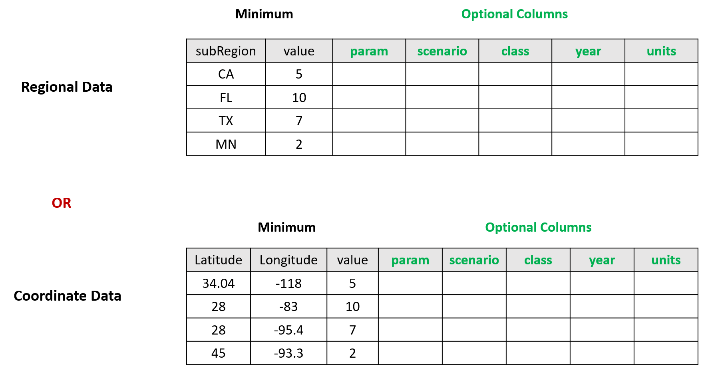
For GCAM users, gcamextractor is a convient way to extract CGAM data into the format required by argus. More details can be accessed at gcamextractor Github.
Selections
Other drop downs include selections for:
- Scenarios Running
- Reference Scenario
- Parameters Displayed
- Regions Included
These selections can be changed at anytime by clicking the inputs drop down in the upper right corner. Checkmarks next to options signify their selection. The figure below displays the drop down menus for each category.
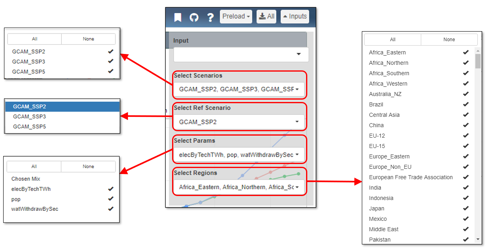
Top Bar
On the right side of the top bar, there are four additional icons along with the inputs panel, specified below:
- Bookmarking
- Github
- Help
- Download All
- Preload

1. Bookmarking
By clicking the bookmarking icon, you can obtain a downloadable .RDS file or a URL linking to the webpage as it currently appears, saving all inputs and modifications. The figure below shows a preview of the window you will be directed to by clicking the bookmarking icon. With this icon, you can also load a previously created bookmark. Step-by-step instruction on creating, sharing and loading bookmarks is provided in the Bookmarks section.
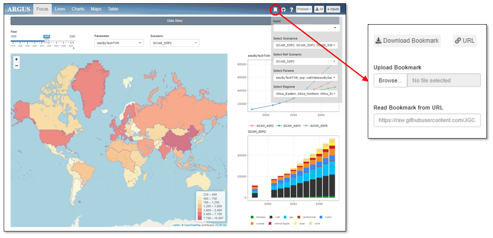
2. Github
The Github icon will redirect you to the Argus Github page. On this page you can find the Argus source code. The figure below gives a preview of the window you will be directed to by clicking the Github icon.
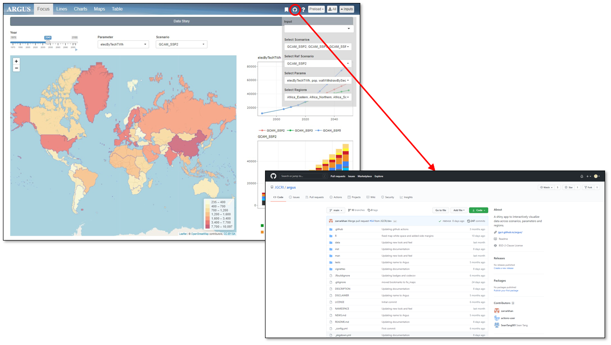
3. Help
Clicking the help icon will take you to the webpage including the Installation and User Guide. The figure below gives a preview of the window that will open by clicking the help icon.
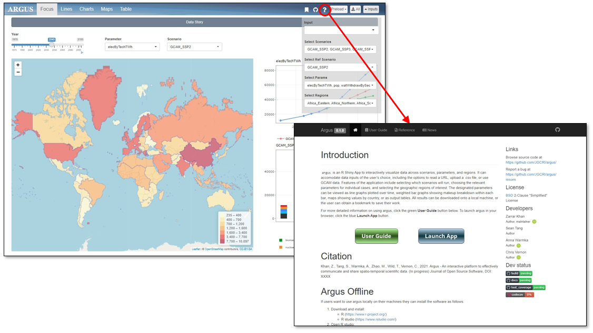
Bookmarks
Create a Bookmark
- Choose all your inputs (scenarios, parameters, years, zoom levels etc.)
- Click the bookmark icon in the top bar as shown in the figure below.
- Click
Download Boomarkand choose an appropriate name (e.g.my_argus_bookmark.rds). - Argus will download your current state and save as
my_argus_bookmark.rds.
Focus
The Focus tab, shown in the figure below, gives an overview of the data input based on the year, parameter, and scenario selected. These can be changed using the scrollbar and dropdown menus pointed out at the top of the page. The overview map and comparative charts with change to reflect the selections.
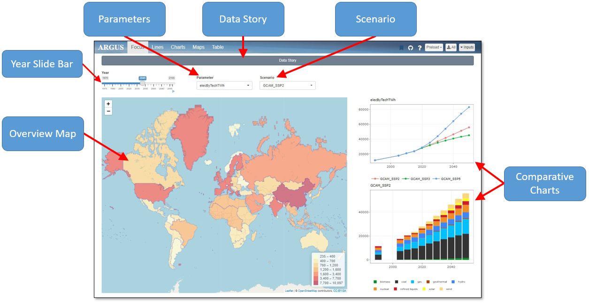
Lines
The Lines tab, pictured below, shows graphs plotted over time to compare each scenario by parameter. These figures can be downloaded by using the download page button in the upper right corner.
The user can also visualize each scenario by parameter split into several regions with the Compare Regions tab. In this tab, each row of graphs show one parameter over several regions.
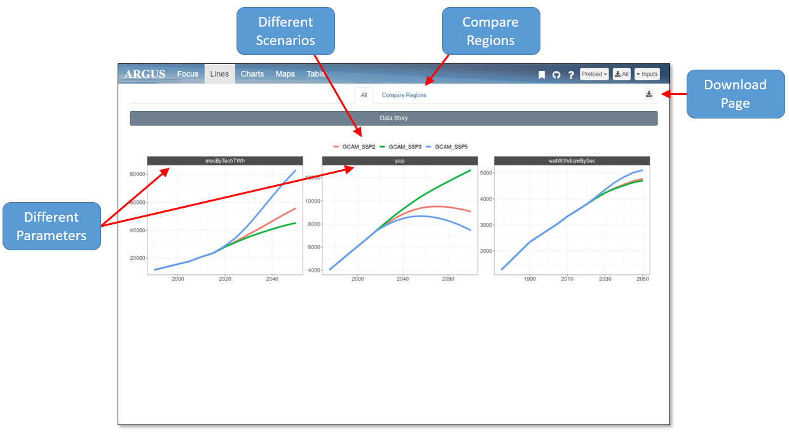
Charts
The Charts tab, seen in the figure below, shows stacked bar graphs for each parameter by scenario, with descriptive legends below each set of graphs. Each parameter is labeled on the far left of the graphs, and each scenario is labeled on the top. These figures can be downloaded by using the download page button in the upper right corner.
The landing page for this tab is the Absolute Value charts. The user can also navigate to the Absolute Difference or Percent Difference charts. The Absolute and Percent Difference charts display the reference scenario charts on the left and the differences between the reference scenario and the other scenarios on the right.

Maps
The Maps tab, pictured below, shows each parameter by scenario split up by region. The maps can show these data over different years by using the scrollbar in the upper left. Each parameter is labeled on the far left of the maps, and each scenario is labeled on the top. The legend type can be changed using the drop down menu at the top of the page, and this will change the legends seen underneath each set of maps. These figures can be downloaded by using the download page button in the upper right corner.
The landing page for this tab is the Absolute Value maps. The user can also navigate to Absolute Difference or Percent Different maps. The Absolute Difference and Percent Difference maps show the difference in each parameter between the reference scenario set in the inputs menu and the other scenarios selected.
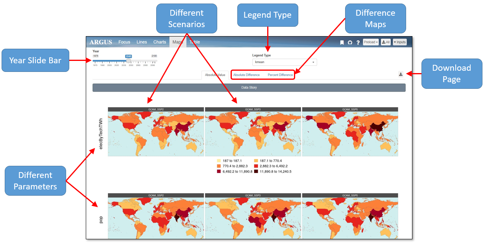
Table
The Table tab, shown in the image below, displays a table with every data point entered. This table can be downloaded using the download page button in the upper right corner. The table can be searched for specific values, years, etc. using the search bar, and the column filters can be used to display specified sets of data. The user can also navigate between pages using the icons in the bottom right corner.
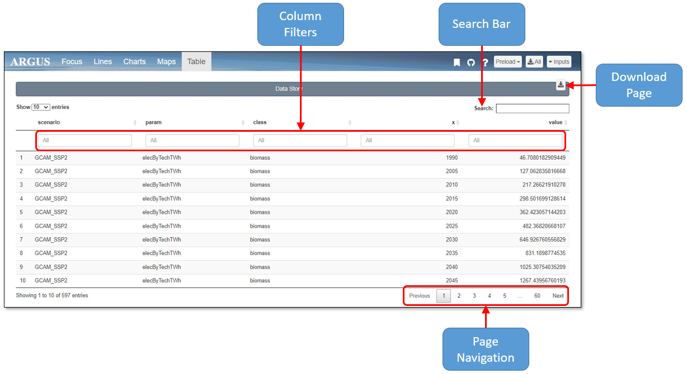
Data Story
Data story, shown in the image below, allows users to insert text and describe the story of the data. The story can be added by using Edit button after expanding the Data Story bar below the Tab bar. Choose a title and fill in the text body to guide your audiences through the background, analysis, and more about the data!
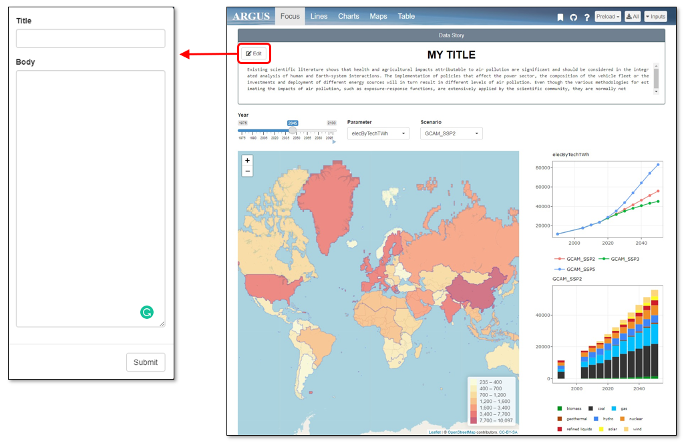